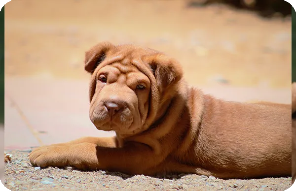

Presentación

El Shar Pei es una raza de tamaño mediano originaria de China, famosa por su piel suelta y abundantes arrugas que cubren su cuerpo, especialmente en los cachorros. Posee un pelaje extremadamente corto y áspero al tacto (de ahí su nombre, que significa "piel de arena"), una lengua de color azul-negro única y una estructura física sólida y compacta con orejas pequeñas y pegadas.
Personalidad
Los Shar Pei son perros serenos, independientes y profundamente devotos de su familia. Son conocidos por su temperamento reservado y digno, actuando a menudo de forma distante con los extraños. Aunque no son excesivamente cariñosos de forma efusiva, son guardianes naturales muy vigilantes y protectores de su hogar, mostrando una lealtad inquebrantable a quienes consideran su manada.
Origen
Esta raza milenaria proviene de las provincias del sur de China, donde originalmente se utilizaba como perro de granja, pastor y cazador de jabalíes. Durante la Revolución Cultural china la raza estuvo a punto de desaparecer, pero gracias al esfuerzo de criadores en Hong Kong y Estados Unidos, el Shar Pei sobrevivió, convirtiéndose hoy en un símbolo de distinción y rareza en todo el mundo.
Salud
El Shar Pei suele tener una esperanza de vida de entre 9 y 11 años. Debido a su anatomía particular, pueden ser propensos a la "Fiebre del Shar Pei" y a problemas cutáneos si no se cuidan sus pliegues. También pueden presentar entropión (un problema en los párpados) o displasia. Es fundamental contar con un veterinario que conozca bien las necesidades específicas de esta raza para asegurar su bienestar.
Aseo
Aunque su pelo corto requiere poco cepillado, el cuidado de su piel es crítico; es vital limpiar y, sobre todo, secar muy bien la humedad entre sus arrugas para prevenir irritaciones o infecciones. No necesitan baños excesivamente frecuentes, pero sí una revisión regular de sus oídos, que son estrechos y propensos a infecciones, además de mantener sus uñas y dientes en buen estado.
Nutrición
El Shar Pei necesita una dieta equilibrada de alta calidad, a menudo con ingredientes limitados para evitar sensibilidades alimentarias que se reflejen en su piel. Las porciones deben ser controladas para mantener un peso saludable que no ejerza presión extra sobre sus articulaciones. Es recomendable dividir su comida en dos tomas y evitar el exceso de proteínas procesadas, proporcionando siempre agua limpia.